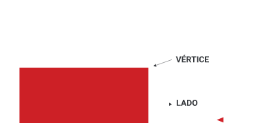
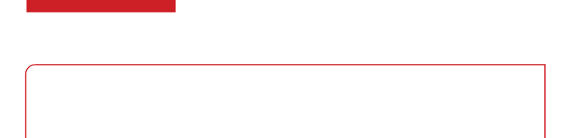
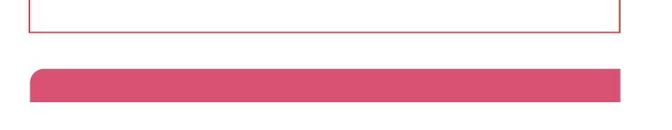

5)
O RETÂNGULO TEM QUATRO LADOS E QUATRO VÉRTICES. OBSERVE.

VÉRTICE
LADO
REPRESENTAÇÃO ESQUEMÁTICA DE UM RETÂNGULO.
VALÉRIA REZENDE
DESENHE UM TRIÂNGULO E IDENTIFIQUE SEUS LADOS E VÉRTICES.

Espera-se que os estudantes desenhem um triângulo e identifiquem seus três lados e seus três vértices.

Na atividade 5, comece explicando o que é um retângulo, destacando que ele possui quatro lados e quatro vértices.
Depois que os estudantes terminarem de desenhar seus triângulos, peça que identifiquem e rotulem os três lados e os três vértices em seus desenhos.
Antes de começar a seção “Ampliando conhecimentos”, pergunte quais são os alimentos de origem dos povos indígenas que utilizamos na nossa alimentação, valorizando os conhecimentos prévios.
Em seguida, realize uma leitura autoral por indícios do texto autoral, na qual os estudantes, por meio de pistas das palavras, infiram não sobre o que está escrito, mas sim sobre onde está escrito.
Faça a leitura compartilhada.